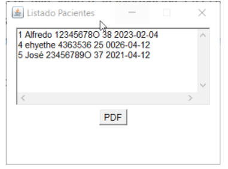

Para ver un listado de los elementos existentes en una tabla, junto a su información, en el menú principal, haremos click en la tabla y en 'Listado'. Se abrirá la siguiente ventana, donde aparecen todos los elementos con su información. Además, habrá un botón para visualizar esta información en un documento PDF.
